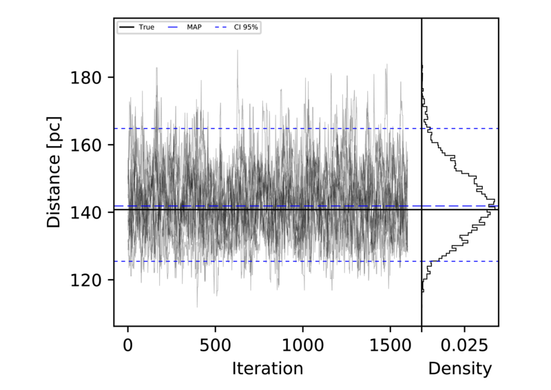

Analysis of prior distributions¶
This section presents an example of the influence the prior distribution may have on the inferred posterior distribution of the distance.
We will examine the influence that four types of Priors have in the inferred posterior distribution of the distances of synthetic samples generated from three different scenarios: the Open cluster scenario, the Young association scenario, and the Solar neighbourhood scenario. In each of them, we generate a synthetic sample of objects with known distances, and therefore true parallaxes, then we add some noise in the form of uncertainties. To generate realisitc uncertainties, we use a Chi-square distribution whose parameters were found by fitting the TGAS distribution of parallax uncertainties. The parameters we found are \(df=2.54,loc=0.21\ \ mas, scale=0.069\ \ mas\).
Once the synthetic samples were generated, we applyed the p2d code to infer the individual distances. We run the MCMC sampler by 2000 iteration and discarded the first 20% to avoid biases due to initialization parameters. This number of iterations ensures that the integrated autocorrelation time, which was aleays less than 40, was always considerably smaller than the total runing time.
As an example of the recovered distances, Figure Example of inferred distance shows the inferred distance of one object from the Open cluster synthetic data set. In this case, a uniform prior with scale of 500 pc was used. The figure shows, in the left panel, the MCMC chain and in the right one the posterior distance distribution. Both panels show the true distance and the MAP and 95% confidence interval (CI) of the distribution.
Example of inferred distance
To asses the performance of the estimators and the influence of the Priors, we use several statistics of the relative error (RE). We define the later as :
where the \(MAP\{\hat{d}\}\) is the Maximum-a-Posteriori of the inferred distance distribution, and \(d\) is the true distance.
The statistics we use to sumarise the relative error are the following.
The Mean Absolute Deviation (MAD) defined as:
\begin{equation} MAD = \frac{1}{n}\sum_i^n |RE|, \end{equation}The Mode of the RE distribution
The Mean of the RE dsitribution.
The Standard Deviation (SD) of the RE dsitribution
The best prior may be that which minimises the above statistics.
The following cases provide some insight of the priors influence on the posterior distributions.
The results of those sections show that …
In your particular case, test the different priors provided with p2d, and find the most suitable for your particular data set.